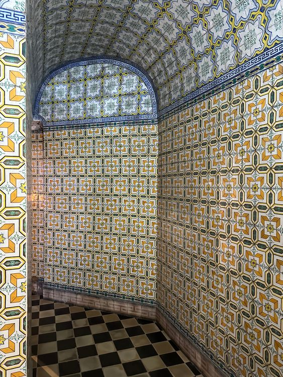

Caso 01 · Restoration · Porto
Rua das Flores — matching a wall that has lost tiles
A leaking gutter had destroyed 34 tiles of an 1890s façade in Porto's old town. The owners wanted the wall whole again — not patched, and not falsified.

- Subject
- Matched singles, 1890s pattern
- Tiles
- 34
- Size
- Singles, 15 × 15 cm
- Setting
- Exterior — façade, Porto
- Year
- 2026
- Status
- Installed
The brief
Replace 34 missing tiles on a listed façade. The repeat had to continue unbroken across the replacements, the colour had to sit with 130-year-old tiles — and the building's conservation officer had to approve the approach before work began.
Decisions
The pattern was redrawn from the survivors, never from a photograph: nineteenth-century repeats are rarely square, and the drawing had to inherit the original's small irregularities. The cobalt took three test firings — the old pigment runs darker and greyer than a modern mix. Each new tile was painted a half-tone lighter than its neighbours, because new glaze is brighter; in a year of Porto weather it will close most of the gap. Every replacement is dated 2026 on its back and recorded in a list held by the owners: honest at arm's length, legible up close, never disguised.
Outcome
34 tiles installed in one day by the owners' mason, working from the numbered map. From the street the wall reads as one wall again. The gutter was repaired first — new tiles under a leaking gutter would have been the same commission twice.